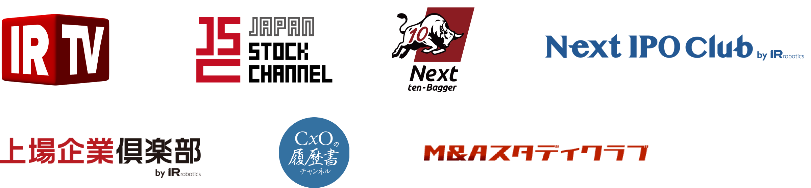

2つの相談窓口の違い
具体的な転職相談と中長期のキャリア相談の違い
CxO人材バンクでは、キャリアアップを考える方と成長企業の縁をつなぎ、人材のキャリアアップを支援するにあたって、
現在の人材の方々と背景を考え、中長期のキャリア相談窓口を用意しています。
-
具体的な転職相談とは
現在、キャリアアップを目指している
転職支援をご希望の方と
面談から候補企業を選定し紹介を行っていきます。 -
中長期のキャリア相談とは
現在、キャリアアップを目指している
転職支援をご希望の方と
面談から候補企業を選定し紹介を行っていきます。
具体的な転職を考えるタイミング以外でも
人材にとって多くの成長機会の提供を行う理由
CxO人材バンクでは、成長企業、成長産業に特化したサービス展開を元に、成長企業の経営者との
勉強会やコミュニティをつくり、様々な形で交流を行っています。
成長企業の経営者の成長促進に重要な人材との縁をつくっています。
そこで、経営に必要なハイクラスな人材を今すぐ欲しいという企業に対してふさわしい人材との縁だけではなく、
そこで聞かれる経営者からの必要な人材についての声を多くの人材にお伝えしながら、
今後のキャリアアップを目指す人材へのキャリア相談をお受けしています。
今すぐ転職はしないが中長期のキャリア相談を希望される方との交流
今すぐ転職はしないが中長期のキャリア相談を希望される方との交流
また、将来のキャリア相談だけでなく、CxOというハイクラスのポジションへとキャリアアップした方と今後、
自身のキャリアアップを考えている方との交流を行ったり、時には、成長企業の経営者、経営幹部の方も交えた交流の場を提供することもあります。
企業と人材の成長を長く伴走し、
人材の中長期のキャリア相談を実施しています
企業も人材も日々変化成長しています。
成長企業、成長産業の経営者の成長を伴走するサービスを数多く行っているCxO人材バンクグループだからこそ、
企業と人材の成長におけるベストタイミングでのマッチングを行えます。
これまでも、企業勤務しつつ人材としての成長を重ねながら3年8月を経て、
ベストなタイミングでの新しい企業とのマッチングを実現した方がいらっしゃいます。